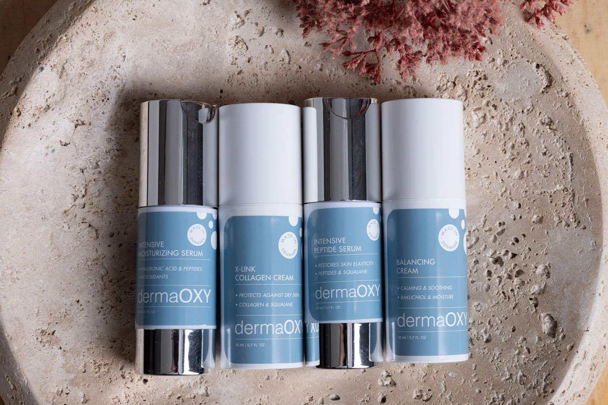
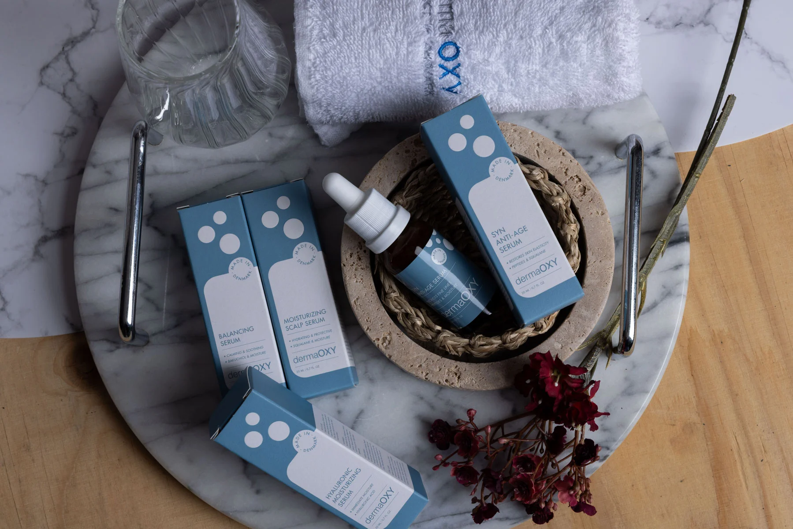

DermaOXY е марка на MedicTinedic ApS и включва козметични продукти за грижа за кожата, разработени и произведени в Дания. Те възстановяват здравето на кожата и противодействат на бръчките и сухотата чрез използването на естествени активни съставки. Терапиите и продуктите за грижа на DermaOXY осигуряват хидратация на кожата и скалпа с активна хиалуронова киселина, високо съдържание на антиоксиданти и активен комплекс от витамини, които стимулират собственото клетъчно обновяване и производството на колаген в кожата.
DermaOXY подхожда с голямо уважение към естествената структура на кожата и чрез своите продукти цели да покаже, че анти-ейдж ефект може да бъде постигнат без козметични процедури. Затова в своите терапии използва кислород - чист кислород - който спомага за забавяне на процесите на стареене на кожата и стимулира производството на еластин и колаген.
DermaOXY е част от бъдещето на грижата за кожата и разликата може да се види още след първата терапия.

Кислородната концепция на DermaOXY е разработена да работи в хармония с естествените процеси на кожата, поради което голямо внимание се отделя на внимателния подбор на съставките. Заедно, избраните съставки правят съществена разлика за здравето, хидратацията и структурата на кожата. Внимателно подбираме и комбинираме суровини с документирани анти-ейдж ефекти, фокусирайки се върху намаляването на бръчките и фините линии, като същевременно насърчаваме видимо по-здрава кожа. Кислородното лечение е ефективна и безопасна процедура, напълно неинвазивна и без инжекции.
Не сте напълно сигурни за DermaOxy? Вижте често задаваните въпроси, свързани с компанията!